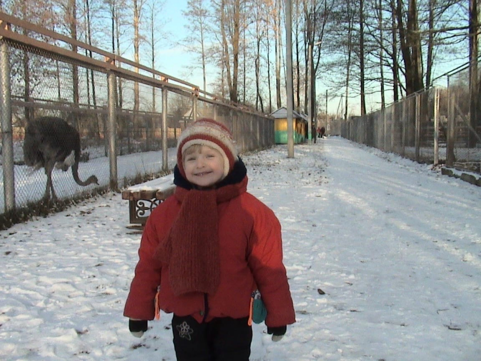

О Юле
Знакомьтесь! Эту малышку зовут Юля Сазонова, и сегодня я познакомлю Вас с ней.
Юля - искренний и весёлый человек, поэтому Она - душа любой компании. Юля любит проводить время с семьёй и друзьями. У Юли есть младший двоюродный братик Серёжка, а также неотъемлемым членом её семьи является кошечка Оливка.
С Юлей мы начали общаться с самого первого дня нашей учебы в Академии.
Больше года назад я и представить себе не могла, что совместные походы в столовку принесут в мою жизнь не только вкусную запеканку, но и близкую подружку!
Одним из талантов Юли является фотография. Она умеет замечать прекрасное даже в самых, казалось бы, обычных вещах, поэтому Юлькины фотографии получаются такими эстетичными и живыми.
А чтобы увидеть больше фотографий, переходите на ее аккаунт!